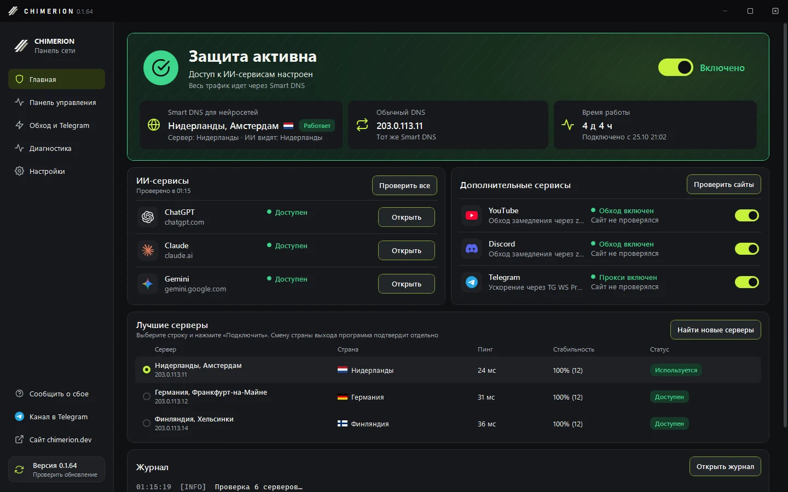
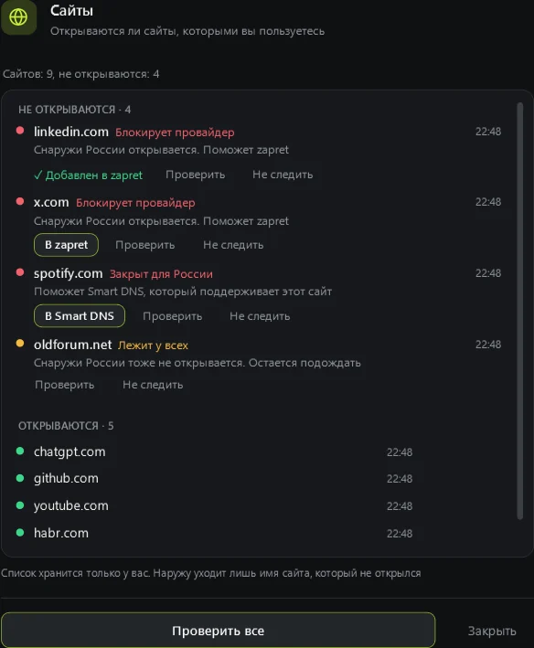
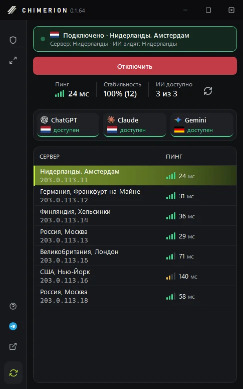
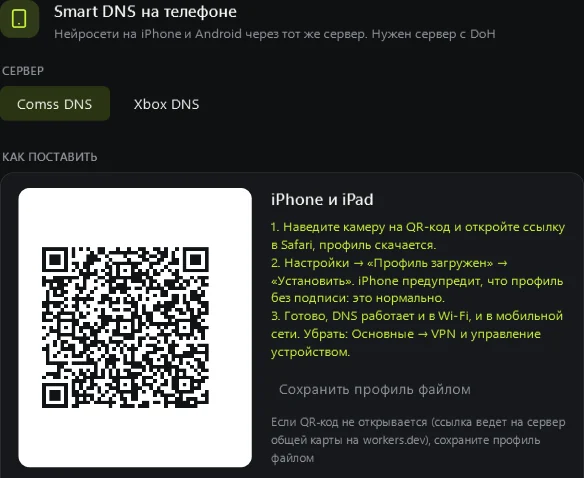

ChatGPT, Claude и Gemini из России без VPN
Программа для Windows сама находит рабочий Smart DNS, проверяет его на нейросетях и подключает в один клик. Банки, Госуслуги и остальной интернет работают как раньше.
Windows 10 и 11, нужен .NET 8 Desktop Runtime.
- ChatGPTchatgpt.com Регион не поддерживается
- Claudeclaude.ai Регион не поддерживается
- Geminigemini.google.com Регион не поддерживается
- YouTubeyoutube.com Видео не грузится
- Остальной интернет
- Банк и Госуслугиsberbank.ru, gosuslugi.ru Как обычно
Запросы идут к DNS провайдера, и сервисы видят адрес из России.
- 3 нейросетиChatGPT, Claude и Gemini проверяются на каждом сервере
- 80 тысячзаблокированных сайтов в готовом списке обхода
- 38 наборовсайтов для zapret: соцсети, видео, игры, работа
- 0 рублейоткрытый код и подписанные сборки на GitHub
Включили и пользуетесь
Программа сама собирает Smart DNS с форумов, сайтов и Telegram-каналов и проверяет каждый: открывается ли сервис, из какой страны вас видят. На главном экране только важное, а полный список серверов и тонкие настройки в панели управления.

- ЗащитаОдин переключатель. Видно, через какой сервер идут нейросети и сколько держится подключение.
- НейросетиОткрываются ли ChatGPT, Claude и Gemini прямо сейчас, а если нет, то почему.
- Telegram, YouTube, DiscordУскорение и обход замедления своим переключателем.
- Лучшие серверыТри самых надежных. Выберите строку и нажмите «Подключить».
Узнаете что-то из этого?
Красным то, с чем к нам приходят. Салатовым то, что делает программа.
ChatGPT пишет «not available in your country», а Claude просит VPN
Подключает Smart DNS, который открывает нейросети. Перед этим программа проверяет сервер на всех трех сервисах.
С VPN не пускает банк, а без него не открываются нейросети
Два DNS: только нейросети идут через Smart DNS, все остальное как раньше. VPN не нужен, IP остается вашим.
YouTube грузится по минуте, Discord не подключается
Ставит zapret и по кнопке подбирает стратегию обхода, которая работает у вашего провайдера.
Вчерашний DNS сегодня уже не работает
Сторож замечает, что сервер упал, а запасной подхватывает за секунды. Программа предложит замену.
Сайт не открывается, и непонятно почему
Проверяет сам сайт и называет причину: блокирует провайдер, лежит у всех или закрыт для России.
Нейросети нужны и на телефоне
Переносит тот же сервер на iPhone по QR-коду, для Android дает короткую инструкцию.
Telegram Desktop долго грузит картинки и видео
Включает ускорение Telegram одной кнопкой: прокси работает на вашем компьютере.
Скажет, почему сайт не открывается
Программа следит за сайтами, которыми вы пользуетесь. Если какой-то перестал открываться, придет уведомление с причиной, а в «Помощи» на вкладке «Под наблюдением» будет кнопка, которая это исправит.
- Блокирует провайдер: одна кнопка добавит сайт в обход zapret.
- Закрыт для России: сайт отправится в Smart DNS.
- Лежит у всех: программа проверит сайт снаружи России и скажет, что дело не в вашей сети.
- Список хранится у вас. Наружу уходит только имя сайта, который не открылся.

Следит, чтобы страна входа не скакала
Частая смена страны входа повышает риск блокировки аккаунта. Поэтому программа держит одну страну для каждого сервиса.
- Помнит, из какой страны ChatGPT, Claude и Gemini обычно видят вас.
- Спрашивает перед подключением к серверу с другой страной выхода.
- Замену и запасной сервер подбирает с той же страной.
- Может вообще не менять сервер без вас, это включается в настройках.

И на телефоне тоже
Тот же сервер можно поставить на телефон, отдельное приложение для этого не нужно.
- На iPhone и iPad наведите камеру на QR-код и установите профиль.
- На Android 9 и новее впишите адрес в «Частный DNS», программа покажет, где это.
- DNS работает и в Wi-Fi, и в мобильной сети.

Чем это отличается от VPN
У VPN свои плюсы. Для нейросетей, YouTube и Telegram он часто лишний, а иногда мешает.
| Что важно | CHIMERION | VPN | DNS вручную |
|---|---|---|---|
| ChatGPT, Claude и Gemini | Открываются | Открываются | Пока сервер жив |
| Банки и Госуслуги | Как обычно | Часто не пускают | Как обычно |
| Скорость интернета | Не меняется | Падает | Не меняется |
| Если сервер упал | Переключит сама | Сменить вручную | Искать новый |
| YouTube и Discord | zapret внутри | Работают | Не помогает |
| Сайты, закрытые по адресу | Часть через zapret | Открываются | Не помогает |
| Цена | Бесплатно | Обычно платно | Бесплатно |
Если вам нужен доступ вообще ко всему заблокированному, VPN надежнее. Если нужны нейросети, YouTube и Telegram без потери скорости и без проблем с банками, хватит CHIMERION.
Как начать
Устанавливать ничего не нужно, программа работает из папки и дальше обновляется сама.
- Скачайте архивРаспакуйте в любую папку и запустите CHIMERION.exe.
- Дождитесь проверкиПрограмма соберет серверы и проверит их на нейросетях. Лучшие окажутся наверху.
- Нажмите «Подключить»Windows спросит разрешение на смену DNS. «Отключить» вернет все как было.
Частые вопросы
Не нашли ответ? Спросите в чате.
Это безопасно?
Код открыт на GitHub. Архив собирается на GitHub Actions и подписан ключом автора: без верной подписи программа обновление не поставит. Права администратора нужны только в момент смены DNS.
Как проверить, что архив настоящий?
Каждый архив собирается на GitHub Actions из открытого кода, а GitHub подтверждает происхождение. Проверить можно командой gh attestation verify CHIMERION-0.1.64-win-x64.zip -R under2ker/chimerion. Программа сама проверяет подпись каждого обновления.
Чем это лучше VPN?
Меняется только DNS. Скорость не падает, банки и российские сайты работают как обычно, IP остается вашим. Подробнее в сравнении.
Могут ли заблокировать аккаунт?
Обход региональных ограничений нарушает условия сервисов, риск есть всегда. Чтобы его снизить, программа держит одну страну входа и предупреждает, если она меняется.
Что программа отправляет в сеть?
Запросы для проверки серверов и сервисов и проверку обновлений. Итоги проверок для общей карты серверов уходят только с вашего согласия, без IP и списка сайтов. Полный список есть в README.
Если после программы что-то сломалось?
«Отключить» возвращает исходные DNS. Если программа не запускается, в архиве лежит reset-dns.cmd: он вернет все как было. С вопросами приходите в чат.
Есть версия для Mac или Linux?
Пока только Windows 10 и 11. Для телефона программа выдаст настройку того же сервера.
Попробуйте на своем компьютере
Бесплатно. Новые версии ставятся кнопкой внутри программы. Что нового
Обход региональных ограничений нарушает условия использования ИИ-сервисов, аккаунт могут заблокировать. Пользуйтесь программой на свой риск.